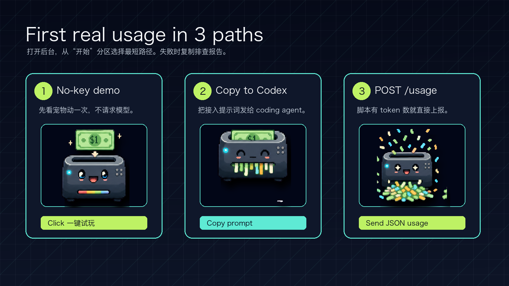
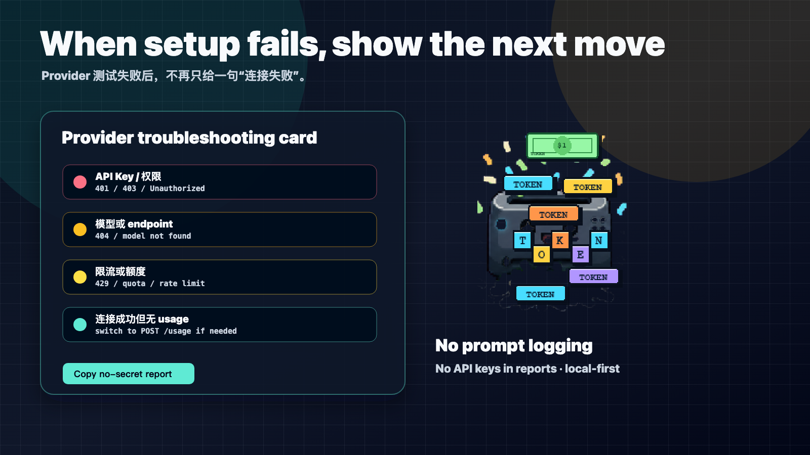

1. No-key demo
先点一键试玩，不请求模型，只确认桌面宠物、成本计算和动画链路正常。
Token Shredder 是一个本机桌面宠物。真实使用时，你的 Agent、脚本或 OpenAI-compatible 客户端把 usage 发到 localhost；宠物只在 usage 到来时碎钱。

先点一键试玩，不请求模型，只确认桌面宠物、成本计算和动画链路正常。
把后台生成的提示词发给 coding agent，让它在你的项目里安全上报 usage。
如果你的脚本已经拿到 token 数，直接 POST 到本机 collector，不需要 API Key。
后台第一屏只需要帮用户选路径：试玩、让 Codex 接入、或直接 POST usage。

Provider 测试失败后会提示 Key、模型、限流、网络或 usage 缺失等方向，并能复制无密钥报告。

curl -X POST http://127.0.0.1:17391/usage \
-H "Content-Type: application/json" \
-d '{"source":"demo-page","scenarioName":"first shred","inputTokens":120000,"outputTokens":45000}'真实 App 运行后，把端口换成后台显示的实际端口即可。
usage 数字、source、scenario、时间戳和本地估算成本。
prompt、completion、messages、API Key、Authorization header、云端上传和第三方 analytics。